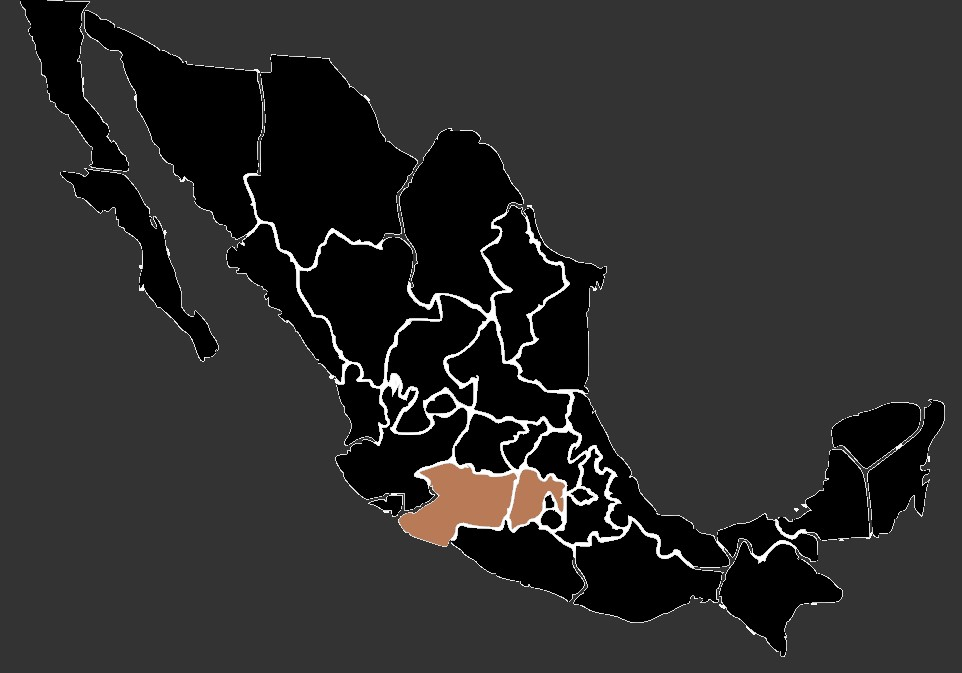

Estas mariposas son de mediano tamaño y se reconocen porque uno de sus pares de patas es corto y parecen cepillos.
Tamaño: Las mariposas monarca tienen una envergadura de alas que varía entre 8.9 y 10.2 centímetros. Su forma es característica de las mariposas, con cuatro alas alargadas y delicadas que presentan bordes festoneados.
Coloración: Sus alas son principalmente de un vibrante color naranja con rayas negras que atraviesan sus alas en un patrón único y llamativo. Además, en los bordes de las alas, se pueden observar manchas blancas y bordes oscuros. La parte inferior de las alas tiene un tono más apagado, con una coloración similar pero menos brillante.
Patrones: Las mariposas monarca presentan un patrón de venas negras que recorren sus alas, creando un diseño intrincado y distintivo. Además, en las alas delanteras, se encuentran pequeñas manchas en forma de puntos en la parte superior.
Cuerpo: El cuerpo de la mariposa monarca es delgado y está dividido en tres secciones: cabeza, tórax y abdomen. La cabeza tiene grandes ojos compuestos, antenas finas y una probóscide enrollada que utilizan para libar néctar.
Tamaño: Las mariposas monarca tienen una envergadura de alas que varía entre 8.9 y 10.2 centímetros. Su forma es característica de las mariposas, con cuatro alas alargadas y delicadas que presentan bordes festoneados.
Coloración: Sus alas son principalmente de un vibrante color naranja con rayas negras que atraviesan sus alas en un patrón único y llamativo. Además, en los bordes de las alas, se pueden observar manchas blancas y bordes oscuros. La parte inferior de las alas tiene un tono más apagado, con una coloración similar pero menos brillante.
Patrones: Las mariposas monarca presentan un patrón de venas negras que recorren sus alas, creando un diseño intrincado y distintivo. Además, en las alas delanteras, se encuentran pequeñas manchas en forma de puntos en la parte superior.
Cuerpo: El cuerpo de la mariposa monarca es delgado y está dividido en tres secciones: cabeza, tórax y abdomen. La cabeza tiene grandes ojos compuestos, antenas finas y una probóscide enrollada que utilizan para libar néctar.
Las mariposas monarca habitan principalmente en América del Norte. Durante los meses cálidos, se pueden encontrar en una amplia variedad de hábitats, desde praderas y campos abiertos hasta jardines y parques. Sin embargo, su hábitat crítico es en los bosques de oyamel en México. Allí, se agrupan en colonias masivas durante el invierno, ocupando específicamente los bosques de oyamel en los estados de Michoacán y México.
Una de las características más asombrosas de las mariposas monarca es su migración anual. Cada año, millones de mariposas emprenden un viaje migratorio desde Canadá y Estados Unidos hasta México, cubriendo distancias de hasta 4,500 kilómetros. Este viaje es una hazaña extraordinaria, ya que las generaciones posteriores a las que comenzaron el viaje son las que completan el ciclo.
Las mariposas monarca viajan a México para pasar el invierno en grandes colonias que se refugian en los bosques de oyamel. Allí, cuelgan en grupos masivos de las ramas de los árboles, cubriendo el dosel forestal y formando un espectáculo impresionante conocido como santuarios de mariposas monarca. En México, los principales estados donde se pueden encontrar las colonias de mariposas monarca durante el invierno son principalmente Michoacán y el Estado de México.
Una de las características más asombrosas de las mariposas monarca es su migración anual. Cada año, millones de mariposas emprenden un viaje migratorio desde Canadá y Estados Unidos hasta México, cubriendo distancias de hasta 4,500 kilómetros. Este viaje es una hazaña extraordinaria, ya que las generaciones posteriores a las que comenzaron el viaje son las que completan el ciclo.
Las mariposas monarca viajan a México para pasar el invierno en grandes colonias que se refugian en los bosques de oyamel. Allí, cuelgan en grupos masivos de las ramas de los árboles, cubriendo el dosel forestal y formando un espectáculo impresionante conocido como santuarios de mariposas monarca. En México, los principales estados donde se pueden encontrar las colonias de mariposas monarca durante el invierno son principalmente Michoacán y el Estado de México.
Las orugas de mariposa monarca se alimentan exclusivamente de plantas de la familia Asclepiadaceae, específicamente de la planta de algodoncillo (Asclepias). Estas plantas contienen toxinas que las orugas acumulan en sus cuerpos, volviéndolas desagradables o tóxicas para los depredadores.
Una vez que emergen, las mariposas monarca se alimentan principalmente del néctar de una variedad de flores. Prefieren las flores con forma de tubo largo, que les permiten extender su probóscide (órgano chupador) y extraer el néctar. Además del néctar, las mariposas adultas también se alimentan ocasionalmente de líquidos ricos en sales minerales, como los que encuentran en suelos húmedos o excrementos de animales.
Una vez que emergen, las mariposas monarca se alimentan principalmente del néctar de una variedad de flores. Prefieren las flores con forma de tubo largo, que les permiten extender su probóscide (órgano chupador) y extraer el néctar. Además del néctar, las mariposas adultas también se alimentan ocasionalmente de líquidos ricos en sales minerales, como los que encuentran en suelos húmedos o excrementos de animales.
•A pesar de que las mariposas monarca comunes tienen una vida útil de unas semanas o meses, las que migran hacia el sur viven más tiempo. Estas mariposas que migran hacia México pueden vivir varios meses para sobrevivir el invierno y regresar al norte para reproducirse en la primavera.
•Las mariposas monarca que migran hacia el sur tienen la capacidad de reconocer patrones y rutas.
•A pesar de su tamaño relativamente pequeño, las mariposas monarca son excelentes voladoras. Son capaces de volar a una velocidad de hasta 24 kilometros por hora
•Las orugas de mariposa monarca se alimentan de la planta de algodoncillo, que contiene toxinas cardíacas llamadas cardenólidos. Estas toxinas se acumulan en el cuerpo de la oruga, lo que las hace desagradables y potencialmente tóxicas para los depredadores.
•Las mariposas monarca que migran hacia el sur tienen la capacidad de reconocer patrones y rutas.
•A pesar de su tamaño relativamente pequeño, las mariposas monarca son excelentes voladoras. Son capaces de volar a una velocidad de hasta 24 kilometros por hora
•Las orugas de mariposa monarca se alimentan de la planta de algodoncillo, que contiene toxinas cardíacas llamadas cardenólidos. Estas toxinas se acumulan en el cuerpo de la oruga, lo que las hace desagradables y potencialmente tóxicas para los depredadores.